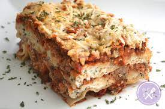

Three Cheese Lasagna

Ingredients
- 1 yellow onion, diced
- 6 cloves of garlic, minced
- 15 oz ricotta cheese
- 1 egg
- 1 teaspoon dried oregano
- 1 cup freshly grated parmesan cheese
- 25 oz jar of good quality pasta sauce
- 2 cups shredded mozzarella cheese
- 9 lasagna noodles
- 1/4 cup chopped fresh parsley
Instructions
-
Add garlic and onion to a skillet with a splash of olive oil. Cook
over medium heat for around 10 minutes, until onion is soft. Add
sauce, stir, and set aside
-
In a bowl, stir to combine the freshly grated parmesan cheese, ricotta
cheese, oregano, egg, and fresh parsley
- Grease a 9 X 13 casserole dish with cooking spray
- Add 1/3 cup sauce to the bottom of the dish and spread it out
- Add 3 lasagna noodles
-
Place 1/2 cup of the ricotta mixture and spread out over the noodles
- Add 1 cup of the sauce and spread out over the top
- Sprinkle on 1/2 cup of mozzarella cheese
-
Add the next layer: 3 noodles, 1/2 cup ricotta, 1 cup sauce, and 1/2
cup of mozzarella
-
For the final layer, add 3 noodles, the rest of the ricotta, the rest
of the sauce, and the remaining 1 cup of mozzarella over the top
-
Cover with foil and bake at 375 degrees for 50-60 minutes until hot
and bubbly
- For crispy edges and top, remove foil for the last 5 minutes